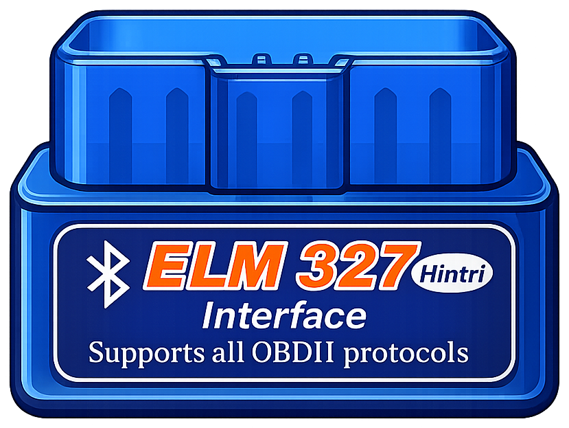

Consumo
11,8km/l
Conversando com motoristas de aplicativo, percebemos sempre o mesmo padrão: todos sabiam quanto tinham faturado no dia, mas nenhum sabia dizer quanto realmente havia sobrado.
Combustível, manutenção e desgaste do carro ficam invisíveis. O faturamento é comemorado; o lucro, ninguém calcula. Um carro rodando o dia inteiro pode estar, na prática, trabalhando no prejuízo — e o motorista só descobre quando o veículo quebra.
O problema nunca foi conseguir mais corridas. Era enxergar o resultado real de cada uma.
Um adaptador plug-and-play que se conecta à porta OBD-II — presente em praticamente todo carro. Sem instalação, sem oficina.

Adaptador OBD-IIO app cruza o sensor com os dados da corrida e dá o veredicto na hora. Não é protótipo: esta é uma captura de um teste real em campo, em Teresina-PI.
No computador, a Motrix vira o centro administrativo do motorista — onde os dados das corridas viram declaração, imposto e decisão.
O sensor é vendido, não subsidiado: ele financia a própria distribuição. A assinatura é margem quase pura e sustenta a operação.
A Motrix é a primeira plataforma de inteligência operacional para motoristas autônomos da América Latina. O sensor é o ponto de partida o valor está na base de dados e na inteligência construída sobre ela.